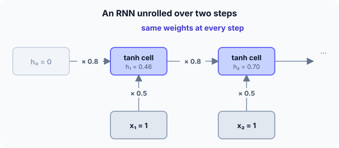

Prerequisites
- Dense layers and tanh.
- Backpropagation.
- Sequences: words in a sentence, values over time.
The analogy
Everyday analogy
Think of reading a sentence word by word. You don't restart your understanding at every word: you carry a running summary in your head and update it with each new word.
An RNN's hidden state is that running summary. The same "update rule" is applied at every step: combine the old summary with the new word.
How it works
One step: $h_t = \tanh(W_{hh} h_{t-1} + W_{xh} x_t + b)$, output $y_t = W_{hy} h_t$. Here (scalars): $W_{hh} = 0.8$, $W_{xh} = 0.5$, $b = 0$.
Start with two time steps by hand
Inputs $x_1 = 1$, $x_2 = 1$; $h_0 = 0$. Use $\tanh(0.5) \approx 0.462$, $\tanh(0.87) \approx 0.701$. Predict, then open "Check".
Example: predict before you read
Step 1. Compute the pre-activation and $h_1$.
Check
$0.8 \cdot 0 + 0.5 \cdot 1 = 0.5$; $h_1 = \tanh(0.5) \approx 0.462$.
Step 2. Cover the next line and guess: the pre-activation and $h_2$.
Check
$0.8 \cdot 0.462 + 0.5 \approx 0.870$; $h_2 = \tanh(0.870) \approx 0.701$.
Step 3. Why is $h_2 \ne h_1$ although $x_2 = x_1$?
Check
Because $h_2$ also depends on $h_1$: the hidden state carries information from earlier inputs.

Quick recall: Before reading further, cover the text above and say out loud: what does the hidden state represent?
Check your answer
A running summary of everything the network has read so far in the sequence.
Finish the picture: the vanishing gradient
Training an RNN means backpropagating through every time step.
- The gradient of $h_2$ with respect to $h_1$. Predict it.
Check
$W_{hh} \cdot (1 - h_2^2) = 0.8 \cdot (1 - 0.701^2) \approx 0.41$.
- Through 20 such steps. Predict the size of the product and the consequence.
Check
About $0.41^{20} \approx 2 \times 10^{-8}$. Early inputs barely affect the gradient, so a plain RNN struggles to learn long-range dependencies; LSTMs and GRUs fix this.
Quick recall: Without scrolling up, say out loud: why do gradients vanish over long sequences in a plain RNN?
Check your answer
Backpropagation through time multiplies one factor $W_{hh} \cdot \tanh'$ per step; with factors below 1, the product shrinks exponentially with the distance.
Full worked calculation
The page's RNN, $h_t = \tanh(0.8\,h_{t-1} + 0.5\,x_t)$, run on the sequence $x = [1, 1, 0, 0]$, then the backward factors that explain why plain RNNs forget.
| $t$ | $x_t$ | $h_{t-1}$ | $0.8\,h_{t-1} + 0.5\,x_t$ | $h_t$ | Backward factor $0.8\,(1 - h_t^2)$ |
|---|---|---|---|---|---|
| 1 | 1 | 0 | 0.5 | 0.462 | 0.629 |
| 2 | 1 | 0.462 | 0.870 | 0.701 | 0.407 |
| 3 | 0 | 0.701 | 0.561 | 0.509 | 0.593 |
| 4 | 0 | 0.509 | 0.407 | 0.386 | 0.681 |
-
1Step 1
$$h_1 = \tanh(0.8 \cdot 0 + 0.5 \cdot 1) = \tanh(0.5) = 0.462$$The memory starts empty ($h_0 = 0$), so only the input counts.
-
2Step 2: same input, different state
$$h_2 = \tanh(0.8 \cdot 0.462 + 0.5 \cdot 1) = \tanh(0.870) = 0.701$$$x_2 = x_1$, but $h_2 \ne h_1$, because the previous state adds 0.37 to the sum. The state encodes "I have seen two 1s".
-
3Steps 3–4: no input, fading memory
$$h_3 = \tanh(0.8 \cdot 0.701) = 0.509, \qquad h_4 = \tanh(0.8 \cdot 0.509) = 0.386$$With $x = 0$, the only thing that keeps the state alive is $w_{hh} = 0.8$. Each step multiplies by less than 1 (and tanh shrinks further), so the memory of the 1s fades.
-
4The same weights at every step
$$\text{parameters: } w_{hh}, \; w_{xh}, \; b \quad (3 \text{ numbers, for a sequence of any length})$$The cell is reused at every time step. That is what lets an RNN read sequences of any length, and why its gradient multiplies through the same weight again and again.
-
5Backward through time
$$\frac{\partial h_t}{\partial h_{t-1}} = w_{hh}\,(1 - h_t^2): \quad 0.407, \; 0.593, \; 0.681 \quad (t = 2, 3, 4)$$To learn how $x_1$ affected $h_4$, the gradient is multiplied by one such factor per step, using tanh's derivative $1 - h^2$.
-
6The product shrinks
$$\frac{\partial h_4}{\partial h_1} = 0.407 \cdot 0.593 \cdot 0.681 = 0.164$$After only 3 steps, 84% of the signal is gone. Over 10 steps with factors around 0.4 it would be $0.4^{10} \approx 0.0001$: the vanishing gradient. The network cannot learn that something 10 steps ago mattered.
What the numbers tell us
An RNN updates one state with the same small rule at every step: $h_t = \tanh(w_{hh} h_{t-1} + w_{xh} x_t + b)$. The state here went 0.46, 0.70, 0.51, 0.39.
Backpropagation through time multiplies one factor per step; with factors below 1 the gradient vanishes, which motivated LSTMs and GRUs.
The rule in plain words
For each time step: $h_t = \tanh(W_{hh} h_{t-1} + W_{xh} x_t + b)$, then (optionally) an output $y_t = W_{hy} h_t$. The same weights are used at every step.
Train with backpropagation through time: unroll the sequence and backpropagate through all steps.
Quick recall: Before you read the code, describe one RNN step in your own words. Then check below.
Check your answer
Multiply the previous hidden state by the recurrent weight, add the input times the input weight and the bias, and pass the sum through tanh.
The code
Read this code after you have done the two steps by hand. It will make more sense.
double rnn_step(double h_prev, double x, double w_hh, double w_xh, double b) {
return tanh(w_hh * h_prev + w_xh * x + b); /* new hidden state */
}
double rnn_run(double x[], int T, double w_hh, double w_xh, double b) {
double h = 0; /* h_0 = 0 */
for (int t = 0; t < T; t++) h = rnn_step(h, x[t], w_hh, w_xh, b); /* same weights each step */
return h; /* summary of the whole sequence */
}Definition
What you just did, in one line: a recurrent neural network processes a sequence step by step, updating a hidden state $h_t = \tanh(W_{hh} h_{t-1} + W_{xh} x_t + b)$ with the same weights at every step.
flowchart LR
H0["h0"] --> C1["cell"]
X1["x1"] --> C1
C1 -->|h1| C2["cell"]
X2["x2"] --> C2
C2 -->|h2| C3["cell"]
X3["x3"] --> C3
C3 -->|h3| Y["output / next layer"]
Putting numbers on it
Quick recall: Before looking at the formula, predict: after 20 steps, how big is a gradient factor of $0.8 \cdot 0.5 = 0.4$ per step?
Check your answer
$0.4^{20} \approx 10^{-8}$: effectively zero.
The recurrence, and the gradient factor that backpropagation multiplies at every step:
$$h_t = \tanh(W_{hh} h_{t-1} + W_{xh} x_t + b), \qquad \frac{\partial h_t}{\partial h_{t-1}} = W_{hh} \,(1 - h_t^2)$$Over $k$ steps the gradient is a product of $k$ such factors: below 1 it vanishes, above 1 it explodes.
| Step | Pre-activation | $h_t$ | Gradient factor |
|---|---|---|---|
| 1 | 0.5 | 0.462 | $0.8(1 - 0.462^2) \approx 0.63$ |
| 2 | 0.870 | 0.701 | $0.8(1 - 0.701^2) \approx 0.41$ |
| 20 steps | — | — | product $\approx 10^{-8}$ |
Warning
Exploding gradients are the opposite problem: if $|W_{hh}|$ is large, gradients grow exponentially and training diverges. Gradient clipping (capping the gradient norm) is the standard fix.
Exam tip
Draw the unrolled network: same cell repeated, hidden state passed right, inputs coming in from below. Then explain vanishing gradients as "a product of many factors below 1".
Common mistakes
- Using different weights at each time step; an RNN shares them.
- Resetting the hidden state between steps of the same sequence.
- Expecting a plain RNN to remember information from hundreds of steps back.
Try it yourself
Exercise 1 (warm-up)
With the same weights, compute $h_1$ for $x_1 = -1$.
Hint
$\tanh$ is odd: $\tanh(-z) = -\tanh z$.
Answer
$\tanh(-0.5) \approx -0.462$.
Exercise 2 (a bit harder)
Compute $h_3$ for the input sequence 1, 1, 0. Write your answer down before you open it.
Show answer
$h_1 = 0.462$, $h_2 = 0.701$, $h_3 = \tanh(0.8 \cdot 0.701 + 0) = \tanh(0.561) \approx 0.509$. Even with input 0, the state remembers the earlier ones, fading slowly.
Did you know?
Did you know?
Jeffrey Elman's "simple recurrent network" (1990) studied how a network could learn grammar from sequences of words.
Before Transformers (2017), RNNs, mostly LSTMs, powered Google Translate, speech recognition and phone keyboards' next-word prediction.
Key points to remember
If you remember one thing from each line, remember the because.
- An RNN handles sequences of any length because it applies the same cell at every step.
- The hidden state carries memory because each new state depends on the previous one.
- The same input can give different states because the state also depends on the past.
- Gradients vanish over long sequences because backpropagation multiplies many factors below 1.
- Training uses backpropagation through time because the unrolled network is just a deep feed-forward network.
Self-check questions
Answer these in order, out loud. They follow the page, so your answers become the script of your video.
- How is an RNN like reading a sentence word by word?
Sample answer
You keep a running summary in your head and update it with each new word; the hidden state is that summary.
- Compute $h_1$ and $h_2$ for inputs 1, 1 with $W_{hh} = 0.8$, $W_{xh} = 0.5$, $b = 0$.
Sample answer
$h_1 = \tanh(0.5) \approx 0.46$; $h_2 = \tanh(0.87) \approx 0.70$.
- Why does
rnn_runreuse the samew_hhandw_xhat every step?A good answer mentions sequence length.
Sample answer
Sharing weights across time lets one small set of parameters process sequences of any length and apply the same rule at every position.
- So what is an RNN, in one sentence?
Sample answer
A network that processes a sequence step by step, updating a hidden state with the same weights at every step.
- Why do plain RNNs struggle with long-range dependencies?
A good answer uses the gradient factor.
Sample answer
The gradient through $k$ steps is a product of $k$ factors like $0.4$; that shrinks to almost zero, so early inputs hardly influence learning.
- What is the RNN update equation?
Sample answer
$h_t = \tanh(W_{hh} h_{t-1} + W_{xh} x_t + b)$.
- How do you deal with exploding gradients in RNNs?
Sample answer
Gradient clipping: rescale the gradient whenever its norm exceeds a threshold.
- If you had to teach this to a friend in 2 minutes, what would you leave out, and why?
Sample answer
I'd leave out exploding gradients and backpropagation through time details. I'd keep the reading analogy, the two-step computation, and "same cell each step, hidden state as memory, gradients vanish over long sequences".
External resources
- Andrej Karpathy: The unreasonable effectiveness of RNNs: character-level RNNs with fun examples.
- PyTorch docs: nn.RNN: the update equation and shapes.
- Wikipedia: Recurrent neural network: history and architectures.
Videos
- YouTube search: StatQuest RNN: StatQuest's clear introduction.